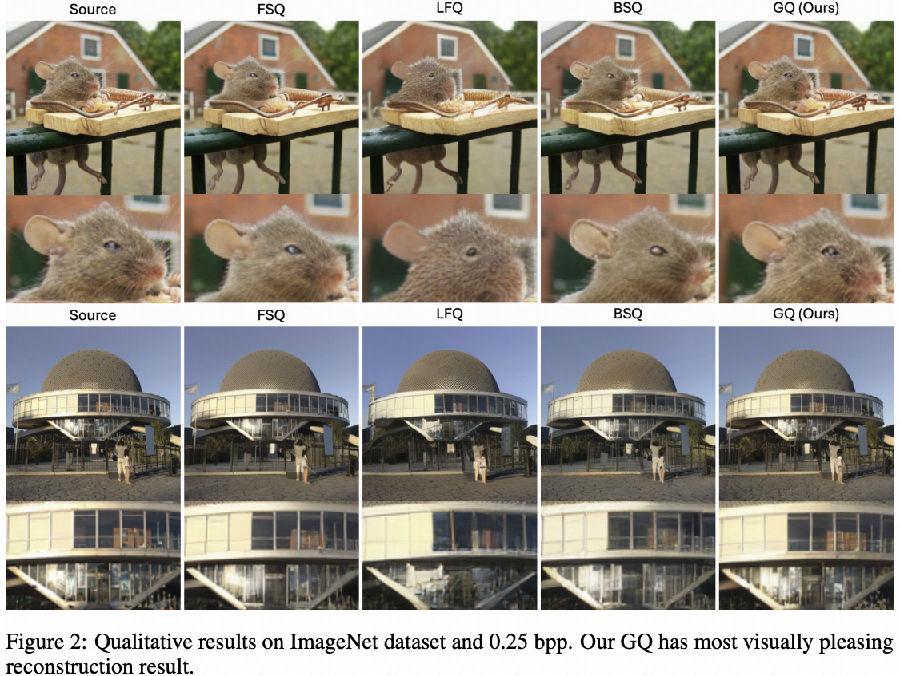
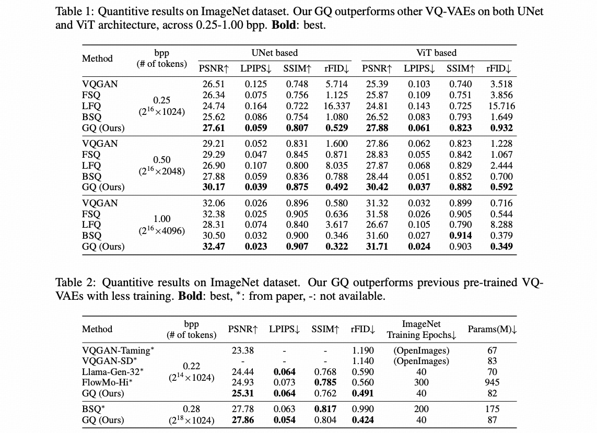

Vector Quantization using Gaussian Variational Autoencoder
Tongda Xu, Wendi Zheng, Jiajun He, José Miguel Hernández-Lobato, Yan Wang, Ya-Qin Zhang, Jie Tang
arXiv | Huggingface | Code
TLDR: We train a Gaussian VAE, convert it into VQ-VAE with almost 100% codebook usage, and keeps reconstruction performance!.
Abstract: Vector quantized variational autoencoder (VQ-VAE) is a discrete auto-encoder that compresses images into discrete tokens. It is difficult to train due to discretization. In this paper, we propose a simple yet effective technique, dubbed Gaussian Quant (GQ), that converts a Gaussian VAE with certain constraint into a VQ-VAE without training. GQ generates random Gaussian noise as a codebook and finds the closest noise to the posterior mean. Theoretically, we prove that when the logarithm of the codebook size exceeds the bits-back coding rate of the Gaussian VAE, a small quantization error is guaranteed. Practically, we propose a heuristic to train Gaussian VAE for effective GQ, named target divergence constraint (TDC). Empirically, we show that GQ outperforms previous VQ-VAEs, such as VQGAN, FSQ, LFQ, and BSQ, on both UNet and ViT architectures. Furthermore, TDC also improves upon previous Gaussian VAE discretization methods, such as TokenBridge. The source code is provided in https://github.com/tongdaxu/VQ-VAE-from-Gaussian-VAE.
 